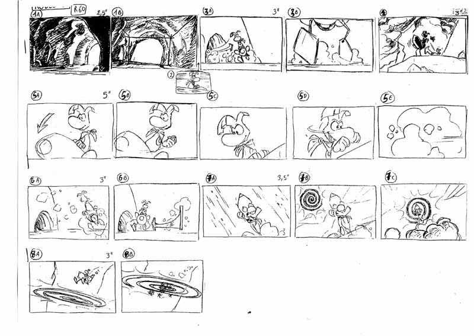

Stage 3: Design
Creative Madness
Once the planning is done and the game is in it's most base form, it's time to get creative! The team is now tasked with designing the game's art style and acquiring assets. Designing the looks of characters, backgrounds, and other assets like weapons, or sprites, or 3D models. During this time, Storyboarding occurs. Storyboarding is when the Dev team draw out comic like panel-by-panel scenes of how they want the game to look and play in action.
This can also last for a while because the team will go through countless designs until they find the look that they feel truly mathces what's in their heads. Once the design process has concluded, it's time to kick it into high gear!
An example story board from the game Rayman, owned by Ubisoft
